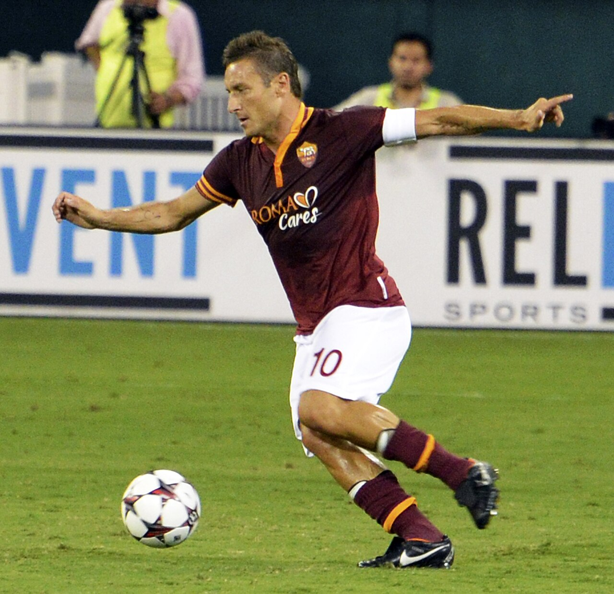

Poucos jogadores na história do futebol podem ser associados a um clube com tanta força quanto Francesco Totti à Roma. O atacante nasceu na capital italiana, cresceu torcendo pela equipe e encerrou a carreira sem jamais defender profissionalmente outra camisa no futebol de clubes.
Não foi uma passagem longa seguida por uma transferência no fim da carreira. Não houve temporada no exterior, contrato em outro gigante italiano ou despedida em uma liga menos competitiva. Do primeiro jogo na Serie A, em 1993, até a última partida, em 2017, Totti foi jogador da Roma.
Essa fidelidade ajuda a explicar por que seu nome ultrapassou os limites das estatísticas. Totti tornou-se capitão, maior artilheiro e jogador com mais partidas da história da Roma. Ao mesmo tempo, chegou ao segundo lugar entre os maiores goleadores da história da Serie A, conquistou a Chuteira de Ouro europeia e foi campeão mundial pela seleção italiana.
A trajetória profissional
Quando se afirma que Francesco Totti passou toda a carreira em um único clube, é importante fazer uma distinção: antes de chegar à Roma, ainda criança, ele passou por equipes de formação como Fortitudo, Smit Trastevere e Lodigiani.
A carreira profissional, porém, teve apenas uma equipe.
Totti chegou às categorias de base da Roma em 1989. O vínculo se transformaria em algo muito maior do que uma simples relação entre jogador e clube. Foram 28 anos dentro da estrutura romanista, considerando formação e equipe principal, sendo 25 temporadas integrando o elenco profissional.
Em uma época na qual os principais jogadores italianos frequentemente circularam entre Juventus, Milan, Inter e clubes estrangeiros, Totti permaneceu em Roma. E permaneceu até o fim.
Não existe uma segunda camisa em seu currículo profissional por clubes. Todos os jogos oficiais e gols registrados em sua carreira de clubes foram pela Roma.
O começo de uma história
A estreia na Série A ocorreu em 28 de março de 1993. Com apenas 16 anos, ele foi colocado em campo pelo técnico Vujadin Boskov nos minutos finais da vitória da Roma por 2 a 0 sobre o Brescia, no estádio Mario Rigamonti.
Naquele momento, ninguém poderia saber que começava uma das histórias de fidelidade mais duradouras do futebol europeu.
O primeiro gol na Serie A veio em 4 de setembro de 1994, contra o Foggia, no Stadio Olimpico. Já incorporado definitivamente ao elenco principal, Totti começava a deixar de ser apenas uma promessa da base para ocupar espaço cada vez maior no futebol italiano.
Ao longo dos anos, também mostrou uma capacidade pouco comum de adaptação. Atuou como meia ofensivo, atacante pelos lados, segundo atacante, camisa 10 clássico e até como referência central do ataque.
Totti mudou de função sob diferentes treinadores: trabalhou como meia com Carlo Mazzone, atuou aberto no esquema de Zdenek Zeman e desempenhou funções mais avançadas com Fabio Capello e Luciano Spalletti.
A camisa 10 e a faixa de capitão
Ele assumiu a camisa 10 que se tornaria inseparável de sua imagem na temporada 1997/98. Pouco depois, em outubro de 1998, recebeu de Aldair a faixa de capitão.
Era o encontro perfeito entre jogador, clube e cidade.
Totti não era apenas uma estrela contratada para representar a Roma. Era romano, formado no clube e torcedor da equipe. Quando se tornou capitão ainda jovem, passou a simbolizar dentro de campo uma ligação que boa parte da torcida enxergava como extensão da própria identidade do clube.
Durante praticamente toda a carreira, o Stadio Olimpico foi o grande palco da história da Roma e o cenário onde o camisa 10 construiu boa parte de sua ligação com a torcida. Foi ali que o capitão viveu clássicos contra a Lazio, noites europeias, conquistas e, em 2017, a emocionante despedida dos gramados após passar toda a carreira profissional defendendo o clube da capital italiana.
A conquista do Scudetto
Entre todos os títulos conquistados por Totti na Roma, nenhum tem peso maior do que o Campeonato Italiano de 2000/01.
Com Fabio Capello no comando e um elenco que reunia nomes como Gabriel Batistuta, Cafu, Vincenzo Montella, Walter Samuel e Emerson, a Roma terminou a Serie A com 75 pontos e conquistou o terceiro Scudetto de sua história.
Totti era o capitão e uma das principais referências técnicas da equipe.
Na rodada decisiva, em 17 de junho de 2001, a Roma venceu o Parma e confirmou matematicamente o título. Totti marcou o primeiro gol da partida que encerrou a espera romanista pelo campeonato. Pouco depois, o clube também conquistou a Supercopa da Itália de 2001.
O título nacional reforçou algo fundamental para a dimensão de sua carreira: Totti poderia ter deixado a Roma em busca de mais troféus, mas escolheu permanecer.
Os números gigantescos da carreira
A longevidade foi acompanhada por uma produção ofensiva extraordinária.
Os dados oficiais da Roma registram:
- 786 jogos oficiais
- 307 gols
- 619 partidas na Serie A
- 250 gols na Serie A
- 64 partidas e 19 gols em copas nacionais
- 103 partidas e 38 gols em competições europeias
Esses números fizeram de Totti simultaneamente o jogador com mais partidas e o maior goleador da história do clube.
Na Serie A, seus 250 gols o colocaram no segundo lugar da lista histórica de artilheiros da competição, atrás de Silvio Piola, que marcou 274. Mais impressionante: todos os gols de Totti no Campeonato Italiano foram feitos com a mesma camisa.
Não é apenas uma marca de longevidade. É também uma demonstração de consistência ofensiva durante diferentes gerações da Roma.
O prêmio da Chuteira de Ouro
A temporada 2006/07 apresentou uma das melhores versões de Francesco Totti.
Já consagrado e com 30 anos, o italiano terminou como artilheiro da Serie A e conquistou a Chuteira de Ouro europeia, prêmio concedido ao principal goleador das ligas nacionais do continente de acordo com o sistema de pontuação da premiação.
Na mesma temporada, a Roma conquistou a Copa da Itália. Em agosto de 2007, levantou também a Supercopa Italiana.
No ano seguinte, Totti acrescentou outra Copa da Itália ao currículo. Dessa maneira, encerrou sua trajetória pela Roma com um Campeonato Italiano, duas Copas da Itália e duas Supercopas nacionais.
Campeão do mundo com a Itália
A fidelidade à Roma não impediu Totti de construir também uma trajetória importante pela seleção italiana.
Foram 58 partidas e nove gols pela equipe principal da Itália. O ponto mais alto veio na Copa do Mundo de 2006, disputada na Alemanha.
Totti chegou ao Mundial depois de sofrer uma grave lesão meses antes, mas conseguiu se recuperar a tempo. Nas oitavas de final contra a Austrália, marcou de pênalti nos acréscimos o gol da vitória italiana por 1 a 0.
A campanha terminou em 9 de julho de 2006, quando a Itália derrotou a França nos pênaltis na final disputada em Berlim e conquistou o quarto título mundial de sua história. Totti tornou-se campeão do mundo em uma geração que também tinha como um de seus grandes símbolos Gianluigi Buffon, goleiro histórico da seleção italiana, além de outros jogadores da Roma, como Daniele De Rossi e Simone Perrotta.
O último jogo e uma despedida histórica
A última partida de Francesco Totti aconteceu em 28 de maio de 2017. A Roma venceu o Genoa por 3 a 2 no Stadio Olimpico, encerrando uma trajetória que havia começado no Campeonato Italiano 24 anos antes.
Ao sair de campo definitivamente, a Roma o colocou imediatamente em seu Hall da Fama.
Era o fechamento de uma carreira que dificilmente pode ser analisada apenas pela quantidade de troféus.
Totti teve oportunidades de competir durante décadas em um futebol europeu cada vez mais internacionalizado, no qual estrelas trocavam de clube em busca de contratos, títulos e novos desafios. Sua escolha foi diferente: fazer toda a trajetória no lugar onde começou.
O ídolo da Roma
Francesco Totti representa um tipo de jogador cada vez mais raro: o chamado one-club man, o atleta que passa toda a carreira profissional defendendo um único clube.
Mas sua história tem um componente adicional. Ele não ficou apenas por fidelidade. Ficou sendo protagonista.
Foi da promessa de 16 anos ao capitão. Do primeiro gol ao recorde de artilharia. Da base ao título italiano. Da camisa 10 ao posto de maior jogador da história da Roma para grande parte de sua torcida.
Durante 25 temporadas no time principal, atravessou diferentes técnicos, companheiros, presidentes, adversários e fases esportivas sem mudar de lado.
Totti poderia ter uma coleção maior de troféus caso tivesse escolhido outros caminhos. Em vez disso, construiu algo que números de títulos sozinhos não conseguem reproduzir: uma carreira profissional inteira pertencente ao mesmo clube.
Francesco Totti não teve passagem pela Roma, teve uma carreira no clube.
E justamente por nunca ter vestido profissionalmente a camisa de outro clube, tornou-se um dos exemplos mais emblemáticos de fidelidade da história do futebol.